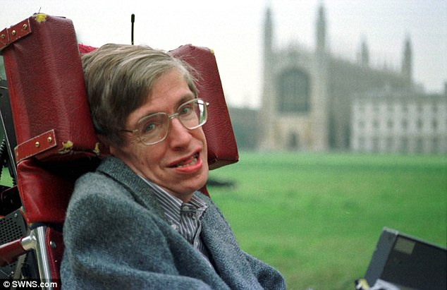

Stephen William Hawking, (8 January 1942 – 14 March 2018) was an English theoretical physicist, cosmologist, and author who was director of research at the Centre for Theoretical Cosmology at the University of Cambridge.
Hawking had two younger sisters, Philippa and Mary, and an adopted brother, Edward Frank David (1955–2003).
Hawking began his schooling at the Byron House School in Highgate, London. He later blamed its "progressive methods" for his failure to learn to read while at the school.
Hawking's first year as a doctoral student was difficult. He was initially disappointed to find that he had been assigned Dennis William Sciama, one of the founders of modern cosmology,
When Hawking began his doctoral studies, there was much debate in the physics community about the prevailing theories of the creation of the universe: the Big Bang and Steady State theories.
Hawking applied the same thinking to the entire universe; and, during 1965, he wrote his thesis on the topic 'The Black Hole' .
He obtained his PhD degree in applied mathematics and theoretical physics, specialising in general relativity and cosmology, in March 1966.
Hawking has made major contributions to the field of general relativity. These derive from a deep understanding of what is relevant to physics and astronomy, and especially from a mastery of wholly new mathematical techniques.
Hawking received the 2015 BBVA Foundation Frontiers of Knowledge Award in Basic Sciences shared with Viatcheslav Mukhanov for discovering that the galaxies were formed from quantum fluctuations in the early Universe.
The Stephen Hawking Medal for Science Communication is an annual award initiated in 2016 to honour members of the arts community for contributions that help build awareness of science.
In 2017, the Cambridge Union Society, in conjunction with Hawking, established the Professor Stephen Hawking Fellowship.
Hawking died at his home in Cambridge on 14 March 2018, at the age of 76.
His family stated that he "died peacefully".